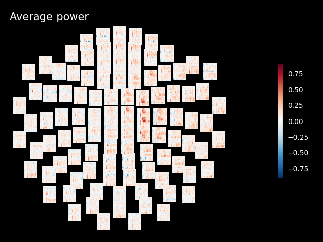
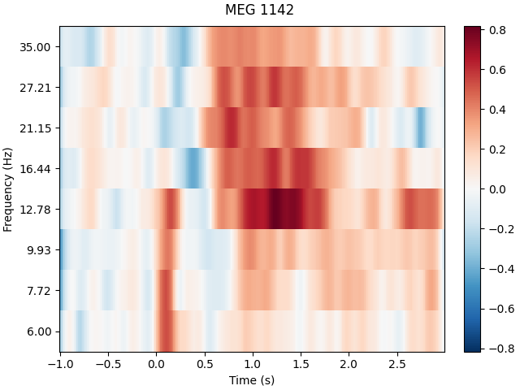
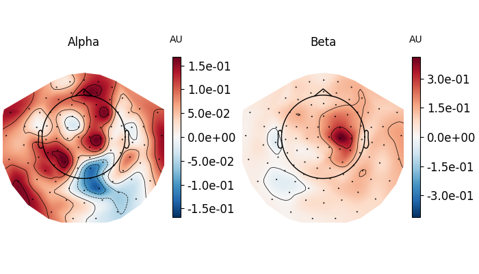

Note
Go to the end to download the full example code
Frequency and time-frequency sensor analysis#
The objective is to show you how to explore the spectral content of your data (frequency and time-frequency). Here we’ll work on Epochs.
We will use this dataset: Somatosensory. It contains so-called event related synchronizations (ERS) / desynchronizations (ERD) in the beta band.
# Authors: Alexandre Gramfort <alexandre.gramfort@inria.fr>
# Stefan Appelhoff <stefan.appelhoff@mailbox.org>
# Richard Höchenberger <richard.hoechenberger@gmail.com>
#
# License: BSD-3-Clause
# Copyright the MNE-Python contributors.
import matplotlib.pyplot as plt
import numpy as np
import mne
from mne.datasets import somato
from mne.time_frequency import tfr_morlet
Set parameters
data_path = somato.data_path()
subject = "01"
task = "somato"
raw_fname = data_path / f"sub-{subject}" / "meg" / f"sub-{subject}_task-{task}_meg.fif"
# Setup for reading the raw data
raw = mne.io.read_raw_fif(raw_fname)
# crop and resample just to reduce computation time
raw.crop(120, 360).load_data().resample(200)
events = mne.find_events(raw, stim_channel="STI 014")
# picks MEG gradiometers
picks = mne.pick_types(raw.info, meg="grad", eeg=False, eog=True, stim=False)
# Construct Epochs
event_id, tmin, tmax = 1, -1.0, 3.0
baseline = (None, 0)
epochs = mne.Epochs(
raw,
events,
event_id,
tmin,
tmax,
picks=picks,
baseline=baseline,
reject=dict(grad=4000e-13, eog=350e-6),
preload=True,
)
Opening raw data file /home/circleci/mne_data/MNE-somato-data/sub-01/meg/sub-01_task-somato_meg.fif...
Range : 237600 ... 506999 = 791.189 ... 1688.266 secs
Ready.
Reading 0 ... 72074 = 0.000 ... 240.001 secs...
29 events found on stim channel STI 014
Event IDs: [1]
29 events found on stim channel STI 014
Event IDs: [1]
29 events found on stim channel STI 014
Event IDs: [1]
Not setting metadata
29 matching events found
Setting baseline interval to [-1.0, 0.0] s
Applying baseline correction (mode: mean)
0 projection items activated
Using data from preloaded Raw for 29 events and 801 original time points ...
Rejecting epoch based on EOG : ['EOG 061']
1 bad epochs dropped
Frequency analysis#
We start by exploring the frequency content of our epochs.
Let’s first check out all channel types by averaging across epochs.
epochs.compute_psd(fmin=2.0, fmax=40.0).plot(average=True, picks="data", exclude="bads")
Using multitaper spectrum estimation with 7 DPSS windows
Averaging across epochs...
Now, let’s take a look at the spatial distributions of the PSD, averaged across epochs and frequency bands.
epochs.compute_psd().plot_topomap(ch_type="grad", normalize=False, contours=0)
Using multitaper spectrum estimation with 7 DPSS windows
Alternatively, you can also create PSDs from Epochs methods directly.
Note
In contrast to the methods for visualization, the compute_psd methods
do not scale the data from SI units to more “convenient†values. So
when e.g. calculating the PSD of gradiometers via
compute_psd(), you will get the power as
(T/m)²/Hz (instead of (fT/cm)²/Hz via
plot_psd()).
_, ax = plt.subplots()
spectrum = epochs.compute_psd(fmin=2.0, fmax=40.0, tmax=3.0, n_jobs=None)
# average across epochs first
mean_spectrum = spectrum.average()
psds, freqs = mean_spectrum.get_data(return_freqs=True)
# then convert to dB and take mean & standard deviation across channels
psds = 10 * np.log10(psds)
psds_mean = psds.mean(axis=0)
psds_std = psds.std(axis=0)
ax.plot(freqs, psds_mean, color="k")
ax.fill_between(
freqs,
psds_mean - psds_std,
psds_mean + psds_std,
color="k",
alpha=0.5,
edgecolor="none",
)
ax.set(
title="Multitaper PSD (gradiometers)",
xlabel="Frequency (Hz)",
ylabel="Power Spectral Density (dB)",
)
Using multitaper spectrum estimation with 7 DPSS windows
Notably, mne.Epochs.compute_psd() supports the keyword argument
average, which specifies how to estimate the PSD based on the individual
windowed segments. The default is average='mean', which simply calculates
the arithmetic mean across segments. Specifying average='median', in
contrast, returns the PSD based on the median of the segments (corrected for
bias relative to the mean), which is a more robust measure.
# Estimate PSDs based on "mean" and "median" averaging for comparison.
kwargs = dict(fmin=2, fmax=40, n_jobs=None)
psds_welch_mean, freqs_mean = epochs.compute_psd(
"welch", average="mean", **kwargs
).get_data(return_freqs=True)
psds_welch_median, freqs_median = epochs.compute_psd(
"welch", average="median", **kwargs
).get_data(return_freqs=True)
# Convert power to dB scale.
psds_welch_mean = 10 * np.log10(psds_welch_mean)
psds_welch_median = 10 * np.log10(psds_welch_median)
# We will only plot the PSD for a single sensor in the first epoch.
ch_name = "MEG 0122"
ch_idx = epochs.info["ch_names"].index(ch_name)
epo_idx = 0
_, ax = plt.subplots()
ax.plot(
freqs_mean,
psds_welch_mean[epo_idx, ch_idx, :],
color="k",
ls="-",
label="mean of segments",
)
ax.plot(
freqs_median,
psds_welch_median[epo_idx, ch_idx, :],
color="k",
ls="--",
label="median of segments",
)
ax.set(
title=f"Welch PSD ({ch_name}, Epoch {epo_idx})",
xlabel="Frequency (Hz)",
ylabel="Power Spectral Density (dB)",
)
ax.legend(loc="upper right")
Effective window size : 4.005 (s)
Effective window size : 4.005 (s)
Lastly, we can also retrieve the unaggregated segments by passing
average=None to mne.Epochs.compute_psd(). The dimensions of
the returned array are (n_epochs, n_sensors, n_freqs, n_segments).
welch_unagg = epochs.compute_psd("welch", average=None, **kwargs)
print(welch_unagg.shape)
Effective window size : 4.005 (s)
(28, 204, 152, 1)
Time-frequency analysis: power and inter-trial coherence#
We now compute time-frequency representations (TFRs) from our Epochs. We’ll look at power and inter-trial coherence (ITC).
To this we’ll use the function mne.time_frequency.tfr_morlet()
but you can also use mne.time_frequency.tfr_multitaper()
or mne.time_frequency.tfr_stockwell().
Note
The decim parameter reduces the sampling rate of the time-frequency
decomposition by the defined factor. This is usually done to reduce
memory usage. For more information refer to the documentation of
mne.time_frequency.tfr_morlet().
define frequencies of interest (log-spaced)
[Parallel(n_jobs=1)]: Done 17 tasks | elapsed: 0.1s
[Parallel(n_jobs=1)]: Done 71 tasks | elapsed: 0.7s
[Parallel(n_jobs=1)]: Done 161 tasks | elapsed: 1.6s
Inspect power#
Note
The generated figures are interactive. In the topo you can click on an image to visualize the data for one sensor. You can also select a portion in the time-frequency plane to obtain a topomap for a certain time-frequency region.
power.plot_topo(baseline=(-0.5, 0), mode="logratio", title="Average power")
power.plot([82], baseline=(-0.5, 0), mode="logratio", title=power.ch_names[82])
fig, axes = plt.subplots(1, 2, figsize=(7, 4), layout="constrained")
topomap_kw = dict(
ch_type="grad", tmin=0.5, tmax=1.5, baseline=(-0.5, 0), mode="logratio", show=False
)
plot_dict = dict(Alpha=dict(fmin=8, fmax=12), Beta=dict(fmin=13, fmax=25))
for ax, (title, fmin_fmax) in zip(axes, plot_dict.items()):
power.plot_topomap(**fmin_fmax, axes=ax, **topomap_kw)
ax.set_title(title)
- 
- 
- 
Applying baseline correction (mode: logratio)
Applying baseline correction (mode: logratio)
Applying baseline correction (mode: logratio)
Applying baseline correction (mode: logratio)
Joint Plot#
You can also create a joint plot showing both the aggregated TFR across channels and topomaps at specific times and frequencies to obtain a quick overview regarding oscillatory effects across time and space.
power.plot_joint(
baseline=(-0.5, 0), mode="mean", tmin=-0.5, tmax=2, timefreqs=[(0.5, 10), (1.3, 8)]
)
Applying baseline correction (mode: mean)
Applying baseline correction (mode: mean)
Applying baseline correction (mode: mean)
Inspect ITC#
itc.plot_topo(title="Inter-Trial coherence", vmin=0.0, vmax=1.0, cmap="Reds")
No baseline correction applied
Note
Baseline correction can be applied to power or done in plots. To illustrate the baseline correction in plots, the next line is commented:
# power.apply_baseline(baseline=(-0.5, 0), mode='logratio')
Exercise#
Visualize the inter-trial coherence values as topomaps as done with power.
Total running time of the script: (0 minutes 28.046 seconds)
Estimated memory usage: 209 MB